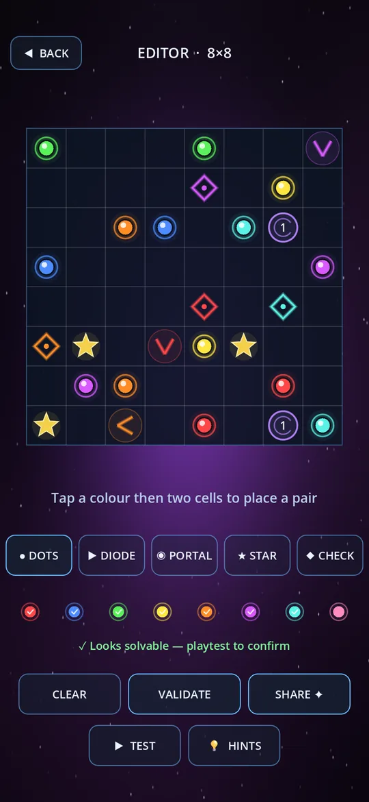

Puzzels oplossen is leuk. Er een maken waar een vriend op vastloopt is nog leuker. Circuit Trace heeft een complete puzzel-editor ingebouwd, met al het gereedschap meteen beschikbaar. Zo ga je van een leeg raster naar een puzzelcode in je groepsapp.



Stap 1: open de editor en kies een formaat
Open in het hoofdmenu de Creator en tik op MAAK EEN PUZZEL. Kies een raster: 5×5 voor een snelle puzzel, 6×6 voor een gewone, 7×7 voor een uitdaging of 8×8 voor het serieuze werk.
Stap 2: plaats de stippen
Tik met het gereedschap ● DOTS op een kleur en daarna op twee vakjes om een paar te maken. Op het grootste bord plaats je tot 8 paren. De statusregel laat zien hoeveel paren je hebt geplaatst en hoeveel er nog bij mogen.
Stap 3: voeg stukken toe (optioneel)
- ▶ DIODE: tik op een vakje voor een pijl in één richting. Tik nog eens om hem te draaien (rechts, omlaag, links, omhoog) en nog een keer om hem weg te halen. Kies eerst een kleur om de diode aan dat paar te koppelen. Meer in hoe diodes werken.
- ◉ PORTAL: tik op een leeg vakje en daarna op een tweede. De twee zijn gekoppeld. Meer in hoe portals werken.
- ★ STAR: tik op een vakje voor een bonusster, tik nog eens om hem weg te halen.
- ◆ CHECK: kies een kleur en tik op een vakje. De lijn van die kleur moet door het checkpoint gaan.
Elk rasterformaat heeft een maximum aan diodes, portals, sterren en checkpoints, en de editor zegt het als je dat bereikt.
Stap 4: controleer
Tik op CONTROLEER. De editor laat een echte solver op je bord los. Zegt hij Oplosbaar, dan zit het goed. Zo niet, dan zegt hij waarom: een kleur die niet kan verbinden, paren die elkaar blokkeren, een checkpoint dat zijn kleur niet kan bereiken, of een bord dat gewoon te ingewikkeld is. Verplaats een stip en probeer opnieuw.
Stap 5: speel hem zelf
Tik op TEST en speel je eigen puzzel. Oplosbaar is niet hetzelfde als leuk. Heb jij hem in drie seconden opgelost, dan je vrienden ook.
Stap 6: deel hem
Tik op DELEN, geef je puzzel een naam, en je krijgt een code als CT-D04B5-2Y9G0-C2EGT-V0000-00000-0000B. Kopieer hem, stuur hem naar een vriend, daag iemand direct uit of publiceer hem in de Community, zodat elke speler hem kan proberen en liken. Je puzzels worden bewaard in MIJN PUZZELS, met plek voor vijf.
Vrienden die de game nog niet hebben, plakken de code op onze speel-een-codepagina en lossen hem op in hun browser.
Vijf tips voor puzzels waar mensen van houden
1. Teken eerst de oplossing
Bedenk het afgemaakte bord in je hoofd of op papier: lange, kronkelende lijnen die het raster vullen. Zet daarna de twee uiteinden van elke lijn neer als stippen. Zo gebouwde puzzels zijn altijd oplosbaar en meestal interessant.
2. Vermijd korte, rechte paren
Twee stippen op dezelfde rij met niets ertussen verbinden zichzelf. Dat is opvulling. De puzzel zit in paren die om elkaar heen moeten buigen.
3. Maak de lange lijn de sleutel
Geef één paar een lange, verrassende route. De beste puzzels hebben één lijn die onmogelijk voelt tot het kwartje valt.
4. Blokkeer kortere wegen met stukken
Vinden testers een makkelijke route die je niet bedoelde, dan sluit één diode of checkpoint hem vaak af.
5. Geef hem een naam
Een naam als "Neon Spiraal" komt verder dan "Puzzel #3". Hij staat in het deelbericht en in de Community.
Benieuwd hoe een hele puzzel in één code past? Lees de wiskunde achter korte codes (Engels).
Download Circuit Trace gratis op Google Play en open de Creator: al het editorgereedschap is gratis.
Veelgestelde vragen
Is de puzzel-editor van Circuit Trace gratis?
Ja. Al het gereedschap is meteen beschikbaar, en delen en publiceren is gratis.
Welke rasterformaten kan ik in de editor gebruiken?
Van 5×5 tot 8×8, met tot 8 kleurparen op het grootste bord.
Hoe spelen vrienden mijn puzzel?
Stuur ze de code. In de app openen ze de Creator, tikken op SPEEL GEDEELDE CODE en plakken hem. Zonder de app spelen ze hem op circuittrace.app/puzzle/.